토목기사 (2021-05-15 기출문제)
1과목: 응용역학
1. 그림과 같이 케이블(cable)에 5kN의 추가 매달려 있다. 이 추의 중심을 수평으로 3m 이동시키기 위해 케이블 길이 5m 지점인 A점에 수평력 P를 가하고자 한다. 이때 힘 P의 크기는?
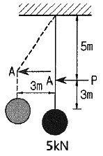
- 3.75kN
- 4.00kN
- 4.25kN
- 4.50kN
(정답률: 73%)

2. 지름이 D인 원형단면의 단면 2차 극모멘트(IP)의 값은?
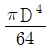
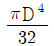
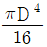
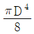
(정답률: 71%)
3. 그림과 같은 3힌지 아치에서 A점의 수평반력(HA)은?
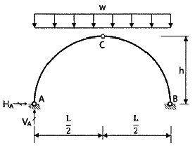
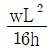
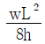
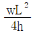
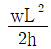
(정답률: 72%)
4. 단면 2차 모멘트가 I, 길이가 L인 균일한 단면의 직선상(直線狀)의 기둥이 있다. 기둥의 양단이 고정되어 있을 때 오일러(Euler) 좌굴하중은? (단, 이 기둥의 탄성계수는 E 이다.)
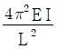
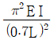
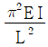
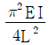
(정답률: 73%)
5. 그림과 같은 집중하중이 작용하는 캔딜레버 보에서 A점의 처짐은? (단, EI는 일정하다.)
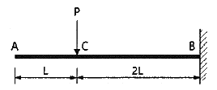
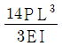
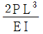
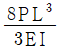
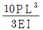
(정답률: 42%)
6. 아래에서 설명하는 것은?
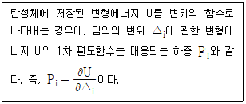
- Castigliano의 제1정리
- Castigliano의 제2정리
- 가상일의 원리
- 공액보법
(정답률: 77%)
7. 재료의 역학적 성질 중 탄성계수를 E, 전단탄성계수를 G, 푸아송 수를 m이라 할 때 각 성질의 상호관계식으로 옳은 것은?
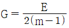
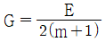
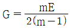
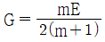
(정답률: 67%)
8. 그림과 같은 단순보에서 C점의 휨모멘트는?
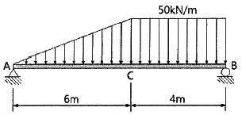
- 320 kN·m
- 420 kN·m
- 480 kN·m
- 540 kN·m
(정답률: 65%)
9. 그림과 같이 2개의 집중하중이 단순보 위를 통과할 때 절대최대 휨모멘트의 크기(Mmax)와 발생위치(x)는?
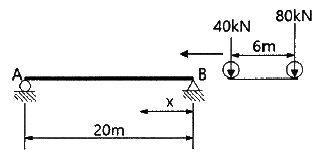
- Mmax = 362 kN·m, x = 8m
- Mmax = 382 kN·m, x = 8m
- Mmax = 486 kN·m, x = 9m
- Mmax = 506 kN·m, x = 9m
(정답률: 74%)
10. 그림과 같은 보에서 두 지점의 반력이 같게 되는 하중의 위치(x)는 얼마인가?
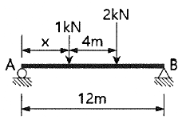
- 0.33m
- 1.33m
- 2.33m
- 3.33m
(정답률: 69%)
11. 폭 20mm, 높이 50mm인 균일한 직사각형 단면의 단순보에 최대전단력이 10kN 작용할 때 최대 전단응력은?
- 6.7 MPa
- 10 MPa
- 13.3 MPa
- 15 MPa
(정답률: 49%)
12. 그림과 같은 부정정보에서 A점의 처짐각(θA)은? (단, 보의 휨강성은 EI이다.)
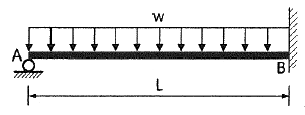
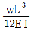
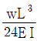
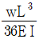
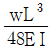
(정답률: 53%)
13. 길이가 같으나 지지조건이 다른 2개의 장주가 있다. 그림 (a)의 장주가 40kN에 견딜 수 있다면 그림 (b)의 장주가 견딜 수 있는 하중은? (단, 재질 및 단면은 동일하며 EI는 일정하다.)
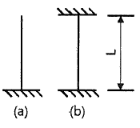
- 40kN
- 160kN
- 320kN
- 640kN
(정답률: 69%)
14. 그림에 표시한 것과 같은 단면의 변화가 있는 AB 부재의 강성도(stiffness factor)는?
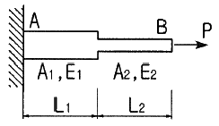
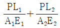
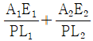
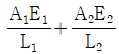
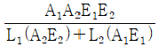
(정답률: 73%)
15. 그림과 같이 밀도가 균일하고 무게가 W인 구(球)가 마찰이 없는 두 벽면 사이에 놓여 있을 때 반력 RA의 크기는?
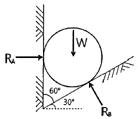
- 0.500W
- 0.577W
- 0.707W
- 0.866W
(정답률: 74%)
16. 그림과 같은 단순보의 최대전단응력(τmax)을 구하면? (단, 보의 단면은 지름이 D인 원이다.)
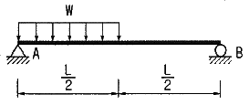
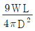
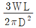
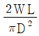
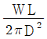
(정답률: 35%)
17. 아래 그림에서 A-A축과 B-B축에 대한 음영부분의 단면 2차 모멘트가 각각 8×108 mm4, 16×108 mm4 일 때 음영 부분의 면적은?
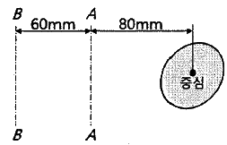
- 8.00 × 104 mm2
- 7.52 × 104 mm2
- 6.06 × 104 mm2
- 5.73 × 104 mm2
(정답률: 59%)
18. 그림과 같은 연속보에서 B점의 지점 반력을 구한 값은?
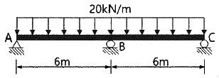
- 100 kN
- 150 kN
- 200 kN
- 250 kN
(정답률: 64%)
19. 그림과 같은 캔딜레버 보에서 B점의 처짐각은? (단, EI는 일정하다.)
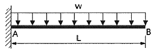
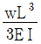
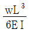
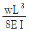
(정답률: 44%)
20. 그림과 같은 트러스에서 L1U1 부재의 부재력은?
- 22 kN(인장)
- 25 kN(인장)
- 22 kN(압축)
- 25 kN(압축)
(정답률: 68%)
2과목: 측량학
21. 수로조사에서 간출지의 높이와 수심의 기준이 되는 것은?
- 약최고고저면
- 평균중등수위면
- 수애면
- 약최저저조면
(정답률: 42%)
22. 그림과 같이 각 격자의 크기가 10m×10m로 동일한 지역의 전체 토량은?
- 877.5 m3
- 893.6 m3
- 913.7 m3
- 926.1 m3
(정답률: 59%)
23. 동일 구간에 대해 3개의 관측군으로 나누어 거리관측을 실시한 결과가 표와 같을 때, 이 구간의 최확값은?
- 50.354m
- 50.356m
- 50.358m
- 50.362m
(정답률: 56%)
24. 클로소이드 곡선(clothoid curve)에 대한 설명으로 옳지 않은 것은?
- 고속도로에 널리 이용된다.
- 곡률이 곡선의 길이에 비례한다.
- 완화곡선의 일종이다.
- 클로소이드 요소는 모두 단위를 갖지 않는다.
(정답률: 75%)
25. 표척이 앞으로 3° 기울어져 있는 표척의 읽음값이 3.645m 이었다면 높이의 보정량은?
- 5mm
- -5mm
- 10mm
- -10mm
(정답률: 47%)
26. 최근 GNSS 측량의 의사거리 결정에 영향을 주는 오차와 거리가 먼 것은?
- 위성의 궤도 오차
- 위성의 시계 오차
- 위성의 기하학적 위치에 따른 오차
- SA(selective availability) 오차
(정답률: 66%)
27. 평탄한 지역에서 9개 측선으로 구성된 다각측량에서 2′ 의 각관측 오차가 발생하였다면 오차의 처리 방법으로 옳은 것은? (단, 허용오차는 60″ √N 로 가정한다.)
- 오차가 크므로 다시 관측한다.
- 측선의 거리에 비례하여 배분한다.
- 관측각의 크기에 역비례하여 배분한다.
- 관측각에 같은 크기로 배분한다.
(정답률: 41%)
28. 도로의 단곡선 설치에서 교각이 60°, 반지름이 150m이며, 곡선시점이 No.8+17m(20m×8+17m)일 때 종단현에 대한 편각은?
- 0° 02′ 45″
- 2° 41′ 21″
- 2° 57′ 54″
- 3° 15′ 23″
(정답률: 45%)
29. 표고가 300m인 평지에서 삼각망의 기선을 측정한 결과 600m 이었다. 이 기선에 대하여 평균해수면 상의 거리로 보정할 때 보정량은? (단, 지구반지름 R = 6370km)
- +2.83cm
- +2.42cm
- -2.42cm
- -2.83cm
(정답률: 38%)
30. 수치지형도(Digital Map)에 대한 설명으로 틀린 것은?
- 우리나라는 축척 1:5000 수치지형도를 국토기본도로 한다.
- 주로 필지정보와 표고자료, 수계정보 등을 얻을 수 있다.
- 일반적으로 항공사진측량에 의해 구축된다.
- 축척별 포함 사항이 다르다.
(정답률: 55%)
31. 등고선의 성질에 대한 설명으로 옳지 않은 것은?
- 등고선은 분수선(능선)과 평행하다.
- 등고선은 도면 내·외에서 폐합하는 폐곡선이다.
- 지도의 도면 내에서 등고선이 폐합하는 경우에 등고선의 내부에는 산꼭대기 또는 분지가 있다.
- 절벽에서 등고선은 서로 만날 수 있다.
(정답률: 65%)
32. 트래버스 측량의 작업순서로 알맞은 것은?
- 선점 – 계획 – 답사 – 조표 - 관측
- 계획 – 답사 – 선점 – 조표 - 관측
- 답사 – 계획 – 조표 – 선점 - 관측
- 조표 – 답사 – 계획 – 선점 – 관측
(정답률: 69%)
33. 지오이드(Geoid)에 대한 설명으로 옳지 않은 것은?
- 평균해수면을 육지까지 연장해 지구전체를 둘러싼 곡면이다.
- 지오이드면은 등포텐셜면으로 중력방향은 이 면에 수직이다.
- 지표 위 모든 점의 위치를 결정하기 위해 수학적으로 정의된 타원체이다.
- 실제로 지오이드면은 굴곡이 심하므로 측지측량의 기준으로 채택하기 어렵다.
(정답률: 46%)
34. 장애물로 인하여 접근하기 어려운 2점 P, Q를 간접거리 측량한 결과가 그림과 같다. 의 거리가 216.90m 일 때 PQ의 거리는?
- 120.96m
- 142.29m
- 173.39m
- 194.22m
(정답률: 50%)
35. 수준측량야장에서 측점 3의 지반고는?
- 10.59m
- 10.46m
- 9.92m
- 9.56m
(정답률: 37%)
36. 다각측량의 특징에 대한 설명으로 옳지 않은 것은?
- 삼각점으로부터 좁은 지역의 세부측량 기준점을 측설하는 경우에 편리하다.
- 삼각측량에 비해 복잡한 시가지나 지형의 기복이 심한 지역에는 알맞지 않다.
- 하천이나 도로 또는 수로 등의 좁고 긴 지역의 측량에 편리하다.
- 다각측량의 종류에는 개방, 폐합, 결합형 등이 있다.
(정답률: 46%)
37. 항공사진 측량에서 사진상에 나타난 두 점 A, B의 거리를 측정하였더니 208mm이었으며, 지상좌표는 아래와 같았다면 사진축척(S)은? (단, XA = 2⑤346.39m, YA = 10793.16m, XB = 2⑤100.11m, YB = 11587.87m)
- S = 1:3000
- S = 1:4000
- S = 1:5000
- S = 1:6000
(정답률: 40%)
38. 그림과 같은 수준망에서 높이차의 정확도가 가장 낮은 것으로 추정되는 노선은? (단, 수준환의 거리 Ⅰ = 4km, Ⅱ = 3km, Ⅲ = 2.4km, Ⅳ(㉯㉳㉲) = 6km)
- ㉮
- ㉯
- ㉰
- ㉱
(정답률: 41%)
39. 도로의 곡선부에서 확폭량(slack)을 구하는 식으로 옳은 것은? (단, L : 차량 앞면에서 차량의 뒤축가지의 거리, R = 차선 중심선의 반지름)
(정답률: 62%)
40. 표준길이에 비하여 2cm 늘어난 50m 줄자로 사각형 토지의 길이를 측정하여 면적을 구하였을 때, 그 면적이 88m2 이었다면 토지의 실제 면적은?
- 87.30m2
- 87.93m2
- 88.07m2
- 88.71m2
(정답률: 53%)
3과목: 수리학 및 수문학
41. 지름 1m의 원통 수조에서 지름 2cm의 관으로 물이 유출되고 있다. 관내의 유속이 2.0m/s 일 때, 수조의 수면이 저하되는 속도는?
- 0.3 cm/s
- 0.4 cm/s
- 0.06 cm/s
- 0.08 cm/s
(정답률: 42%)
42. 유체의 흐름에 관한 설명으로 옳지 않은 것은?
- 유체의 입자가 흐르는 경로를 유적선이라 한다.
- 부정류(不定流)에서는 유선이 시간에 따라 변화한다.
- 정상류(定常流)에서는 하나의 유선이 다른 유선과 교차하게 된다.
- 점성이나 압축성을 완전히 무시하고 밀도가 일정한 이상적은 유체를 완전유체라 한다.
(정답률: 45%)
43. 오리피스의 지름이 2cm, 수축단면(Vena Contracta)의 지름이 1.6cm라면, 유속계수가 0.9 일 때 유랑계수는?
- 0.49
- 0.58
- 0.62
- 0.72
(정답률: 33%)
44. 유역면적이 4km2 이고 유출계수가 0.8인 산지하천에서 강우강도가 80 mm/h이다. 합리식을 사용한 유역출구에서의 첨두홍수량은?
- 35.5 m3/s
- 71.1 m3/s
- 128 m3/s
- 256 m3/s
(정답률: 66%)
45. 유역의 평균 강우량 산정방법이 아닌 것은?
- 등우선법
- 기하평균법
- 산술평균법
- Thiessen의 가중법
(정답률: 52%)
46. 강우강도(I), 지속시간(D), 생기빈도(F) 관계를 표현하는 식 에 대한 설명으로 틀린 것은?
- k, x, n은 지역에 따라 다른 값을 가지는 상수이다.
- T는 강의 생기빈도를 나타내는 연수(年數)로서 재현기간(년)을 의미한다.
- t는 강우의 지속시간(min)으로서, 강우지속시간이 길수록 강우강도(I)는 커진다.
- I는 단위시간에 내리는 강우량(mm/h)인 강우강도이며, 각종 수문학적 해석 및 설계에 필요하다.
(정답률: 63%)
47. 항력(Drag force)에 관한 설명으로 틀린 것은?
- 항력
 으로 표현되며, 항력계수 CD는 Froude의 함수이다.
으로 표현되며, 항력계수 CD는 Froude의 함수이다. - 형상항력은 물체의 형상에 의한 후류(Wake)로 인해 압력이 저하하여 발생하는 압력저항이다.
- 마찰항력은 유체가 물체표면을 흐를 때 점성과 난류에 의해 물체표면에 발생하는 마찰저항이다.
- 조파항력은 물체가 수면에 떠 있거나 물체의 일부분이 수면위에 있을 때에 발생하는 유체저항이다.
(정답률: 50%)
48. 단위유량도(unit hydrograph)를 작성함에 있어서 주요 기본가정(또는 원리)으로만 짝지어진 것은?
- 비례가정, 중첩가정, 직접유출의 가정
- 비례가정, 중첩가정, 일정기저시간의 가정
- 일정기저시간의 가정, 직접유출의 가정, 비례가정
- 직접유출의 가정, 일정기저시간의 가정, 중첩가정
(정답률: 64%)
49. 레이놀즈수(Reynolds) 수에 대한 설명으로 옳은 것은?
- 관성력에 대한 중력의 상대적인 크기
- 압력에 대한 탄성력의 상대적인 크기
- 중력에 대한 점성력의 상대적인 크기
- 관성력에 대한 점성력의 상대적인 크기
(정답률: 63%)
50. 지름 D = 4cm, 조도계수 n = 0.01m-1/3·s인 원형관의 Chezy의 유속계수 C는?(문제 오류로 가답안 발표시 3번으로 발표되었지만 확정답안 발표시 모두 정답처리 되었습니다. 여기서는 가답안인 3번을 누르면 정답 처리 됩니다.)
- 10
- 50
- 100
- 150
(정답률: 68%)
51. 폭이 1m인 직사각형 수로에서 0.5m3/s의 유량이 80cm의 수심으로 흐르는 경우, 이 흐름을 가장 잘 나타낸 것은? (단, 동점성 계수는 0.012cm2/s, 한계수심은 29.5cm이다.)
- 층류이며 상류
- 층류이며 사류
- 난류이며 상류
- 난류이며 사류
(정답률: 39%)
52. 빙산의 비중이 0.92이고 바닷물의 비중은 1.025일 때 빙산이 바닷물 속에 잠겨있는 부분의 부피는 수면 위에 나와 있는 부분의 약 몇 배인가?
- 0.8배
- 4.8배
- 8.8배
- 10.8배
(정답률: 61%)
53. 수온에 따른 지하수의 유속에 대한 설명으로 옳은 것은?
- 4℃에서 가장 크다.
- 수온이 높으면 크다.
- 수온이 낮으면 크다.
- 수온에는 관계없이 일정하다.
(정답률: 55%)
54. 유체 속에 잠긴 곡면에 작용하는 수평분력은?
- 곡면에 의해 배재된 액체의 무게와 같다.
- 곡면의 중심에서의 압력과 면적의 곱과 같다.
- 곡면의 연직상방에 실려 있는 액체의 무게와 같다.
- 곡면을 연직면상에 투영하였을 때 생기는 투영면적에 작용하는 힘과 같다.
(정답률: 48%)
55. 지하수(地下水)에 대한 설명으로 옳지 않은 것은?
- 자유 지하수를 양수(揚水)하는 우물을 굴착정(Artesian well)이라 부른다.
- 불투수층(不透水層) 상부에 있는 지하수를 자유 지하수(自由地下水)라 한다.
- 불투수층과 불투수층 사이에 있는 지하수를 피압지하수(被壓地下水)라 한다.
- 흙입자 사이에 충만되어 있으며 중력의 작용으로 운동하는 물을 지하수라 부른다.
(정답률: 36%)
56. 월류수심 40cm인 전폭 위어의 유량을 Francis 공식에 의해 구한 결과 0.40m3/s 였다. 이 때 위어 폭의 측정에 2cm 의 오차가 발생했다면 유량의 오차는 몇 % 인가?
- 1.16%
- 1.50%
- 2.00%
- 2.33%
(정답률: 28%)
57. 폭 9m의 직사각형 수로에 16.2m3/s 의 유량이 92cm의 수심으로 흐르고 있다. 장파의 전파속도 C와 비에너지 E는? (단, 에너지 보정계수 α=1.0)
- C = 2.0m/s, E = 1.015m
- C = 2.0m/s, E = 1.115m
- C = 3.0m/s, E = 1.015m
- C = 3.0m/s, E = 1.115m
(정답률: 46%)
58. Chezy의 평균유속 공식에서 평균유속계수 C를 Manning의 평균유속 공식을 이용하여 표현한 것으로 옳은 것은?
(정답률: 51%)
59. 비압축성 이상유체에 대한 아래 내용 중 ( )안에 들어갈 알맞은 말은?
- 밀도
- 비중
- 속도
- 점성
(정답률: 59%)
60. 수로경사 I = 1/2500, 조도계수 n = 0.013m-1/3·s인 수로에 아래 그림과 같이 물이 흐르고 있다면 평균유속은? (단, Manning의 공식을 사용한다.)
- 1.65 m/s
- 2.16 m/s
- 2.65 m/s
- 3.16 m/s
(정답률: 37%)
4과목: 철근콘크리트 및 강구조
61. 옹벽의 구조해석에 대한 설명으로 틀린 것은?
- 뒷부벽식 옹벽의 뒷부벽은 직사각형보로 설계하여야 한다.
- 캔틸레버식 옹벽의 전면벽은 저판에 지지된 캔딜레버로 설계할 수 있다.
- 저판의 뒷굽판은 정확한 방법이 사용되지 않는 한, 뒷굽판 상부에 재하되는 모든 하중을 지지하도록 설계하여야 한다.
- 부벽식 옹벽 저판은 정밀한 해석이 사용되지 않는 한, 부벽 사이의 거리를 경간으로 가정한 고정보 또는 연속보로 설계할 수 있다.
(정답률: 69%)
62. 철근콘크리트가 성립되는 조건으로 틀린 것은?
- 철근과 콘크리트 사이의 부착강도가 크다.
- 철근과 콘크리트의 탄성계수가 거의 같다.
- 철근은 콘크리트 속에서 녹이 슬지 않는다.
- 철근과 콘크리트의 열팽창계수가 거의 같다.
(정답률: 59%)
63. 경간이 12m인 대칭 T형보에서 양쪽의 슬래브 중심간 거리가 2.0m, 플랜지의 두께가 300mm, 복부의 폭이 400mm 일 때 플랜지의 유효폭은?
- 2000mm
- 2500mm
- 3000mm
- 5200mm
(정답률: 58%)
64. 콘크리트의 크리프에 대한 설명으로 틀린 것은?
- 고강도 콘크리트는 저강도 콘크리트보다 크리프가 크게 일어난다.
- 콘크리트가 놓이는 주위의 온도가 높을수록 크리프 변형은 크게 일어난다.
- 물-시멘트비가 큰 콘크리트는 물-시멘트비가 작은 콘크리트보다 크리프가 크게 일어난다.
- 일정한 응력이 장시간 계속하여 작용하고 있을 때 변형이 계속 진행되는 현상을 말한다.
(정답률: 48%)
65. 그림과 같은 단순지지 보에서 긴장재는 C점에 150mm의 편차에 직선으로 배치되고, 100 kN으로 긴장되었다. 보에는 120kN의 집중하중이 C점에 작용한다. 보의 고정하중은 무시할 때 C점에서의 휨모멘트는 얼마인가? (단, 긴장재의 경사가 수평압축력에 미치는 영향 및 자중은 무시한다.)
- -150 kN·m
- 90 kN·m
- 240 kN·m
- 390 kN·m
(정답률: 47%)
66. 지름 450mm인 원형 단면을 갖는 중심축하중을 받는 나선철근 기둥에서 강도설계법에 의한 축방향 설계축강도(øPn)는 얼마인가? (단, 이 기둥은 단주이고, fck = 27MPa, fy = 350MPa, Ast = 8-D22 = 3096 mm2, 압축지배단면이다.)
- 1166 kN
- 1299 kN
- 2425 kN
- 2774 kN
(정답률: 52%)
67. 옹벽의 활동에 대한 저항력은 옹벽에 작용하는 수평력에 최소 몇 배 이상이어야 하는가?
- 1.5배
- 2배
- 2.5배
- 3배
(정답률: 49%)
68. 폭(b)이 250mm이고, 전체높이(h)가 500mm인 직사각형 철근콘크리트 보의 단면에 균열을 일으키는 비틀림모멘트(Tcr)는 약 얼마인가? (단, 보통중량콘크리트이며, fck = 28 MPa 이다.)
- 9.8 kN·m
- 11.3 kN·m
- 12.5 kN·m
- 18.4 kN·m
(정답률: 27%)
69. 프리스트레스트 콘크리트(PSC)의 균등질 보의 개념(homogeneous beam concept)을 설명한 것으로 옳은 것은?
- PSC는 결국 부재에 작용하는 하중의 일부 또는 전부를 미리 가해진 프리스트레스와 평행이 되도록 하는 개념
- PSC보를 RC보처럼 생각하여, 콘크리트는 압축력을 받고 긴장재는 인장력을 받게 하여 두 힘의 우력 모멘트로 외력에 의한 휨모멘트에 저항시킨다는 개념
- 콘크리트에 프리스트레스가 가해지면 PSC부재는 탄성재료로 전환되고 이의 해석은 탄성이론으로 가능하다는 개념
- PSC는 강도가 크기 때문에 보의 단면을 강재의 단면으로 가정하여 압축 및 인장을 단면전체가 부담할 수 있다는 개념
(정답률: 47%)
70. 철근콘크리트 구조물 설계 시 철근 간격에 대한 설명으로 틀린 것은? (단, 굵은 골재의 최대 치수에 관련된 규정은 만족하는 것으로 가정한다.)
- 동일 평면에서 평행한 철근 사이의 수평 순간격은 25mm 이상, 또한 철근의 공칭지름 이상으로 하여야 한다.
- 벽체 또는 슬래브에서 휨 주철근의 간격은 벽체나 슬래브 두께의 3배 이하로 하여야 하고, 또한 450mm 이하로 하여야 한다.
- 나선철근 또는 띠철근이 배근된 압축부재에서 축방향 철근의 순간격은 40mm 이상, 또한 철근 공칭 지름의 1.5배 이상으로 하여야 한다.
- 상단과 하단에 2단 이상으로 배치된 경우 상하 철근은 동일 연직면 내에 배치되어야 하고, 이때 상하 철근의 순간격은 40mm 이상으로 하여야 한다.
(정답률: 30%)
71. 철근콘크리트 휨부재에서 최소철근비를 규정한 이유로 가장 적당한 것은?
- 부재의 시공 편의를 위해서
- 부재의 사용성을 증진시키기 위해서
- 부재의 경제적인 단면 설계를 위해서
- 부재의 급작스런 파괴를 방지하기 위해서
(정답률: 70%)
72. 전단철근이 부담하는 전단력 Vs = 150 kN 일 때 수직스터럽으로 전단보강을 하는 경우 최대 배치간격은 얼마 이하인가? (단, 전단철근 1개 단면적 = 125mm2, 횡방향 철근의 설계기준항복강도(fyt) = 400 MPa, fck = 28 MPa, bw = 300mm, d = 500mm, 보통중량콘크리트이다.)
- 167mm
- 250mm
- 333mm
- 600mm
(정답률: 35%)
73. 압축 이형철근의 겹침이음길이에 대한 설명으로 옳은 것은? (단, db는 철근의 공칭직경)
- 어느 경우에나 압축 이형철근의 겹침이음길이는 200mm 이상이어야 한다.
- 콘크리트의 설계기준압축강도가 28MPa 미만인 경우는 규정된 겹침이음길이를 1/5 증가시켜야 한다.
- fy가 500MPa 이하인 경우는 0.72 fydb이상, fy가 500MPa을 초과할 경우는 (1.3fy - 24)db 이상이어야 한다.
- 서로 다른 크기의 철근을 압축부에서 겹침이음하는 경우, 이음길이는 크기가 큰 철근의 정착길이와 크기가 작은 철근의 겹침이음길이 중 큰 값 이상이어야 한다.
(정답률: 36%)
74. 2방향 슬래브의 설계에서 직접설계법을 적용할 수 있는 제한 조건으로 틀린 것은?
- 각 방향으로 3경간 이상이 연속되어야 한다.
- 슬래브 판들은 단변 경간에 대한 장변 경간의 비가 2이하인 직사각형이어야 한다.
- 각 방향으로 연속한 받침부 중심간 경간 차이는 긴 경간의 1/3 이하이어야 한다.
- 모든 하중은 연직하중으로 슬래브 판 전체에 등분포이고, 활하중은 고정하중의 3배 이상이어야 한다.
(정답률: 45%)
75. 아래 그림과 같은 보의 단면에서 표피철근의 간격 s는 최대 얼마 이하로 하여야 하는가? (단, 건조환경에 노출되는 경우로서, 표피철근의 표면에서 부재 측면까지 최단거리(cc)는 40mm, fck = 24MPa, fy = 350MPa 이다.)
- 330mm
- 340mm
- 350mm
- 360mm
(정답률: 35%)
76. 강판형(Plate girder) 복부(web) 두께의 제한이 규정되어 있는 가장 큰 이유는?
- 시공상의 난이
- 좌굴의 방지
- 공비의 절약
- 자중의 경감
(정답률: 66%)
77. 프리스트레스 손실 원인 중 프리스트레스 도입 후 시간의 경과에 따라 생기는 것이 아닌 것은?
- 콘크리트의 크리프
- 콘크리트의 건조수축
- 정착 장치의 활동
- 긴장재 응력의 릴랙세이션
(정답률: 59%)
78. 강합성 교량에서 콘크리트 슬래브와 강(鋼)주형 상부 플랜지를 구조적으로 일체가 되도록 결합시키는 요소는?
- 볼트
- 접착제
- 전단연결재
- 합성철근
(정답률: 59%)
79. 리벳으로 연결된 부재에서 리벳이 상·하 두 부분으로 절단되었다면 그 원인은?
- 리벳의 압축파괴
- 리벳의 전단파괴
- 연결부의 인장파괴
- 연결부의 지압파괴
(정답률: 63%)
80. 강도 설계에 있어서 강도감소계수(ø)의 값으로 틀린 것은?
- 전단력 : 0.75
- 비틀림모멘트 : 0.75
- 인장지배단면 : 0.85
- 포스트텐션 정착구역 : 0.75
(정답률: 56%)
5과목: 토질 및 기초
81. 흙의 포화단위중량이 20 kN/m3 인 포화점토층을 45°경사로 8m를 굴착하엿다. 흙의 강도정수 Cu = 65 kN/m2, ø = 0° 이다. 그림과 같은 파괴면에 대하여 사면의 안전율은? (단, ABCD의 면적은 70m2 이고 O점에서 ABCD의 무게중심까지의 수직거리는 4.5m 이다.)
- 4.72
- 4.21
- 2.67
- 2.36
(정답률: 34%)
82. 통일분류법에 의한 분류기호와 흙의 성질을 표현한 것으로 틀린 것은?
- SM : 실트 섞인 모래
- GC : 점토 섞인 자갈
- CL : 소성이 큰 무기질 점토
- GP : 입도분포가 불량한 자갈
(정답률: 58%)
83. 다음 중 연약점토지반 개량공법이 아닌 것은?
- 프리로딩(Pre-loading) 공법
- 샌드 드레인(Sand drain) 공법
- 페이퍼 드레인(Paper drain) 공법
- 바이브로 플로테이션(Vibro flotation) 공법
(정답률: 64%)
84. 그림과 같은 지반에 재하순간 수주(水柱)가 지표면으로부터 5m 이었다. 20% 압밀이 일어난 후 지표면으로부터 수주의 높이는? (단, 물의 단위중량은 9.81 kN/m3 이다.)
- 1m
- 2m
- 3m
- 4m
(정답률: 46%)
85. 내부마찰각이 30°, 단위중량이 18 kN/m3인 흙의 인장균열 깊이가 3m 일 때 점착력은?
- 15.6 kN/m2
- 16.7 kN/m2
- 17.5 kN/m2
- 18.1 kN/m2
(정답률: 47%)
86. 일반적인 기초의 필요조건으로 틀린 것은?
- 침하를 허용해서는 안 된다.
- 지지력에 대해 안정해야 한다.
- 사용성, 경제성이 좋아야 한다.
- 동해를 받지 않는 최소한의 근입깊이를 가져야 한다.
(정답률: 61%)
87. 흙 속에 있는 한 점의 최대 및 최소 주응력이 각각 200 kN/m2 및 100 kN/m2 일 때 최대 주응력과 30°를 이루는 평면상의 전단응력을 구한 값은?
- 10.5 kN/m2
- 21.5 kN/m2
- 32.3 kN/m2
- 43.3 kN/m2
(정답률: 41%)
88. 토립자가 둥글고 입도분포가 양호한 모래지반에서 N치를 측정한 결과 N = 19가 되었을 경우, Dunham 의 공식에 의한 이 모래의 내부 마찰각(ø)은?
- 20°
- 25°
- 30°
- 35°
(정답률: 52%)
89. 그림과 같은 지반에 대해 수직방향 등가투수계수를 구하면?
- 3.89×10-4 cm/s
- 7.78×10-4 cm/s
- 1.57×10-3 cm/s
- 3.14×10-3 cm/s
(정답률: 54%)
90. 다음 중 동상에 대한 대책으로 틀린 것은?
- 모관수의 상승을 차단한다.
- 지표부근에 단열재료를 매립한다.
- 배수구를 설치하여 지하수위를 낮춘다.
- 동결심도 상부의 흙을 실트질 흙으로 치환한다.
(정답률: 50%)
91. 흙의 다짐곡선은 흙의 종류나 입도 및 다짐에너지 등의 영향으로 변한다. 흙의 다짐 특성에 대한 설명으로 틀린 것은?
- 세립토가 많을수록 최적함수비는 증가한다.
- 점토질 흙은 최대건조단위중량이 작고 사질토는 크다.
- 일반적으로 최대건조단위중량이 큰 흙일수록 최적함수비도 커진다.
- 점성토는 건조측에서 물을 많이 흡수하므로 팽창이 크고 습윤측에서는 팽창이 작다.
(정답률: 50%)
92. 현장에서 채취한 흙 시료에 대하여 아래 조건과 같이 압밀시험을 실시하였다. 이 시료에 320kPa 의 압밀압력을 가했을 때, 0.2cm의 최종 압밀침하가 발생되었다면 압밀이 완료된 후 시료의 간극비는? (단, 물의 단위중량은 9.81 kN/m3 이다.)
- 0.125
- 0.385
- 0.500
- 0.625
(정답률: 26%)
93. 노상토 지지력비(CBR)시험에서 피스톤 2.5mm 관입될 때와 5.0mm 관입될 때를 비교한 결과, 관입량 5.0mm에서 CBR이 더 큰 경우 CBR 값을 결정하는 방법으로 옳은 것은?
- 그대로 관입량 5.00mm 일때의 CBR 값으로 한다.
- 2.5mm 값과 5.0mm 값의 평균을 CBR 값으로 한다.
- 5.0mm 값을 무시하고 2.5mm 값을 표준으로 하여 CBR 값으로 한다.
- 새로운 공시체로 재시험을 하며, 재시험 결과도 5.0mm 값이 크게 나오면 관입량 5.0mm 일 때의 CBR 값으로 한다.
(정답률: 46%)
94. 다음 중 사운딩 시험이 아닌 것은?
- 표준관입시험
- 평판재하시험
- 콘 관입시험
- 베인 시험
(정답률: 49%)
95. 단면적이 100cm2, 길이가 30cm 인 모래 시료에 대하여 정수두 투수시험을 실시하였다. 이때 수두추가 50cm, 5분 동안 집수된 물이 350cm3 이었다면 이 시료의 투수계수는?
- 0.001 cm/s
- 0.007 cm/s
- 0.01 cm/s
- 0.07 cm/s
(정답률: 47%)
96. 아래와 같은 조건에서 AASHTO분류법에 따른 군지수(GI)는?
- 7
- 10
- 13
- 16
(정답률: 29%)
97. 점토층 지반위에 성토를 급속히 하려한다. 성토 직후에 있어서 이 점토의 안정성을 검토하는데 필요한 강도정수를 구하는 합리적인 시험은?
- 비압밀 비배수시험(UU-test)
- 압밀 비배수시험(CU-test)
- 압밀 배수시험(CD-test)
- 투수시험
(정답률: 63%)
98. 연속 기초에 대한 Terzaghi 의 극한지지력 공식은 qu = cNc + 0.5γ1BNγ + γ2DfNq 로 나타낼 수 있다. 아래 그림과 같은 경우 극한지지력 공식의 두 번째 항의 단위중량(γ1)의 값은? (단, 물의 단위중량은 9.81 kN/m3 이다.)
- 14.48 kN/m3
- 16.00 kN/m3
- 17.45 kN/m3
- 18.20 kN/m3
(정답률: 35%)
99. 점토 지반에 있어서 강성 기초와 접지압 분포에 대한 설명으로 옳은 것은?
- 접지압은 어느 부분이나 동일하다.
- 접지압은 토질에 관계없이 일정하다.
- 기초의 모서리 부분에서 접지압이 최대가 된다.
- 기초의 중앙 부분에서 접지압이 최대가 된다.
(정답률: 63%)
100. 토질시험 결과 내부마찰각이 30°, 점착력이 50 kN/m2, 간극수압이 800 kN/m2, 파괴면에 작용하는 수직응력이 3000 kN/m2 일 때 이 흙의 전단응력은?
- 1270 kN/m2
- 1320 kN/m2
- 1580 kN/m2
- 1950 kN/m2
(정답률: 44%)
6과목: 상하수도공학
101. 수원으로부터 취수된 상수가 소비자까지 전달되는 일반적 상수도의 구성순서로 옳은 것은?
- 도수 → 송수 → 정수 → 배수 → 급수
- 송수 → 정수 → 도수 → 급수 → 배수
- 도수 → 정수 → 송수 → 배수 → 급수
- 송수 → 정수 → 도수 → 배수 → 급수
(정답률: 65%)
102. 하수관의 접합방법에 관한 설명으로 틀린 것은?
- 관중심접합은 관의 중심을 일치시키는 방법이다.
- 관저접합은 관의 내면하부를 일치시키는 방법이다.
- 단차접합은 지표의 경사가 급한 경우에 이용되는 방법이다.
- 관정접합은 토공량을 줄이기 위하여 평탄한 지형에 많이 이용되는 방법이다.
(정답률: 53%)
103. 계획오수량을 결정하는 방법에 대한 설명으로 틀린 것은?
- 지하수량은 1일1인최대오수량의 20% 이하로 한다.
- 생활오수량의 1일1인최대오수량은 1일1인최대급수량을 감안하여 결정한다.
- 계획1일평균오수량은 계획1일최소오수량의 1.3~1.8배를 사용한다.
- 합류식에서 우천 시 계획오수량은 원칙적으로 계획시간최대오수량의 3배 이상으로 한다.
(정답률: 47%)
104. 하수 배제방식의 특징에 관한 설명으로 틀린 것은?
- 분류식은 합류식에 비해 우천시 월류의 위험이 크다.
- 합류식은 단면적이 크기 때문에 검사, 수리 등에 유리하다.
- 합류식은 분류식(2계통 건설)에 비해 건설비가 저렴하고 시공이 용이하다.
- 분류식은 강우초기에 노면의 오염물질이 포함된 세정수가 직접 하천 등으로 유입된다.
(정답률: 56%)
1⑤. 호수의 부영양화에 대한 설명으로 틀린 것은?
- 부영양화는 정체성 수역의 상층에서 발생하기 쉽다.
- 부영양화된 수원의 상수는 냄새로 인하여 음료수로 부적당하다.
- 부영양화로 식물성 플랑크톤의 번식이 증가되어 투명도가 저하된다.
- 부영양화로 생물활동이 활발하여 깊은 곳의 용존산소가 풍부하다.
(정답률: 67%)
106. 하수관로시설의 유량을 산출할 때 사용하는 공식으로 옳지 않은 것은?
- Kutter 공식
- Jamssen 공식
- Manning 공식
- Hazen-Williams 공식
(정답률: 41%)
107. 하수처리장 유입수의 SS농도는 200mg/L 이다. 1차 침전지에서 30% 정도가 제거되고, 2차 침전지에서 85%의 제거효율을 갖고 있다. 하루 처리용량이 3000 m3/d 일 때 방류되는 총 SS량은?
- 63 kg/d
- 2800 g/d
- 6300 kg/d
- 6300 mg/d
(정답률: 46%)
108. 상수도관의 관종 선정 시 기본으로 하여야 하는 사항으로 틀린 것은?
- 매설조건에 적합해야 한다.
- 매설환경에 적합한 시공성을 지녀야 한다.
- 내압보다는 외압에 대하여 안전해야 한다.
- 관 재질에 의하여 물이 오염될 우려가 없어야 한다.
(정답률: 64%)
109. 하수도 계획에서 계획우수량 산정과 관계가 없는 것은?
- 배수면적
- 설계강우
- 유출계수
- 집수관로
(정답률: 49%)
110. 먹는 물의 수질기준 항목에서 다음 특성을 갖고 있는 수질기준항목은?
- 불소
- 대장균군
- 질산성질소
- 과망간산칼륨 소비량
(정답률: 48%)
111. 관의 길이가 1000m이고, 지름이 20cm인 관을 지름 40cm의 등치관으로 바꿀 때, 등치관의 길이는? (단, Hazen-Williams 공식을 사용한다.)
- 2924.2m
- 5924.2m
- 19242.6m
- 29242.6m
(정답률: 40%)
112. 폭기조의 MLSS농도 2000 mg/L, 30분간 정치시킨 후 침전된 슬러지 체적이 300 mL/L 일 때 SVI는?
- 100
- 150
- 200
- 250
(정답률: 49%)
113. 유출계수가 0.6이고, 유역면적 2km2에 강우강도 200 mm/h 의 강우가 있었다면 유출량은? (단, 합리식을 사용한다.)
- 24.0 m3/s
- 66.7 m3/s
- 240 m3/s
- 667 m3/s
(정답률: 61%)
114. 정수지에 대한 설명으로 틀린 것은?
- 정수지 상부는 반드시 복개해야 한다.
- 정수지의 유효수심은 3~6m를 표준으로 한다.
- 정수지의 바닥은 저수위보다 1m 이상 낮게 해야 한다.
- 정수지란 정수를 저류하는 탱크로 정수시설로는 최종단계의 시설이다.
(정답률: 47%)
115. 합류식 관로의 단면을 결정하는데 중요한 요소로 옳은 것은?
- 계획우수량
- 계획1일평균오수량
- 계획시간최대오수량
- 계획시간평균오수량
(정답률: 30%)
116. 혐기성 소화법과 비교할 때, 호기성 소화법의 특징으로 옳은 것은?
- 최초시공비 과다
- 유기물 감소율 우수
- 저온시의 효율 향상
- 소화슬러지의 탈수 불량
(정답률: 45%)
117. 정수처리 시 염소소독 공정에서 생성될 수 있는 유해물질은?
- 유기물
- 암모니아
- 환원성 금속이온
- THM(트리할로메탄)
(정답률: 63%)
118. 정수시설 내에서 조류를 제거하는 방법 중 약품으로 조류를 산화시켜 침전처리 등으로 제거하는 방법에 사용되는 것은?
- Zeolite
- 황산구리
- 과망간산칼륨
- 수산화나트륨
(정답률: 48%)
119. 병원성미생물에 의하여 오염되거나 오염될 우려가 있는 경우, 수도꼭지에서의 유리잔류염소는 몇 mg/L 이상 되도록 하여야 하는가?
- 0.1 mg/L
- 0.4 mg/L
- 0.6 mg/L
- 1.8 mg/L
(정답률: 44%)
120. 배수관의 갱생공법으로 기존 관내의 세척(cleaning)을 수행하는 일반적인 공법으로 옳지 않은 것은?
- 제트(jet) 공법
- 실드(shield) 공법
- 로터리(rotary) 공법
- 스크레이퍼(scraper) 공법
(정답률: 57%)
먼저, 시스템 전체의 힘은 수직방향으로는 케이블의 중량과 추가 추의 중량이 상쇄되므로 0이다. 수평방향으로는 P와 케이블의 장력이 작용하므로 다음과 같은 식을 세울 수 있다.
P - T = 0
여기서 T는 케이블의 장력이다. 이제 모멘트를 구해보자. A점을 중심으로 시계방향으로 회전하는 모멘트를 양수로 정의하면, 추가 추의 중심이 3m 이동하기 위해서는 다음과 같은 모멘트가 필요하다.
5kN x 3m = 15kNm
이 모멘트는 P와 케이블의 장력 T에 의해 상쇄된다. A점에서 케이블의 각도가 θ일 때, 케이블의 모멘트는 다음과 같다.
T x 5m x sinθ
따라서, 다음과 같은 식을 세울 수 있다.
P x 3m - T x 5m x sinθ = 15kNm
여기서 θ는 다음과 같다.
θ = tan⁻¹(4/3)
따라서,
sinθ = 4/5
cosθ = 3/5
위의 식에 θ와 cosθ를 대입하면 다음과 같다.
P x 3m - T x 5m x 4/5 = 15kNm
T = 5kN (케이블의 중량)
P = T x 4/5 x 5/3 = 3.33kN
따라서, P는 약 3.75kN이다.